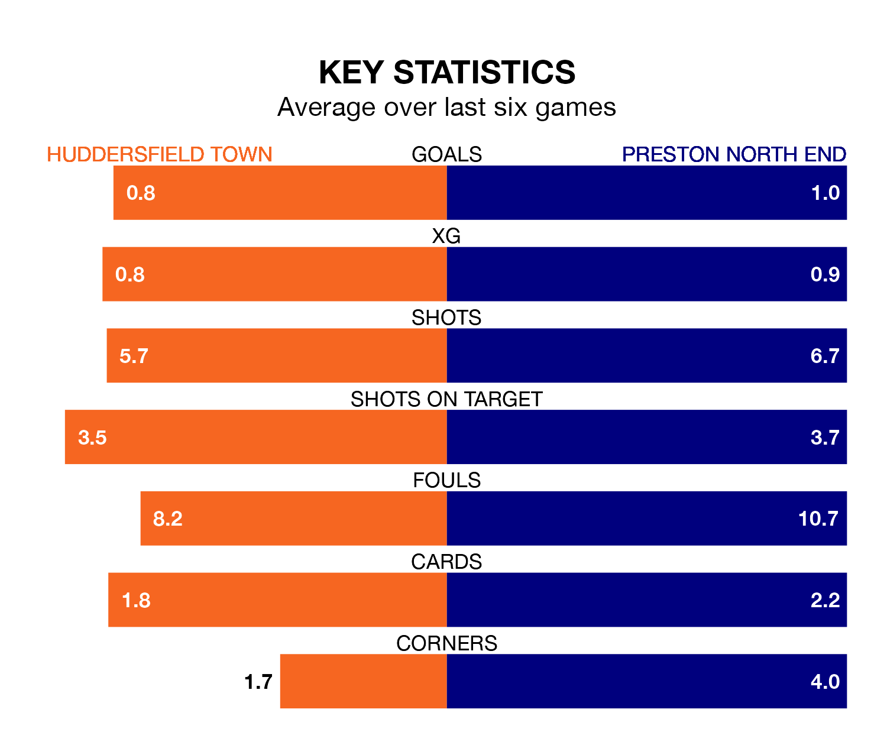

Huddersfield Town host Preston North End on Tuesday at the John Smith's Stadium in the Championship.
In their last league match, on Saturday, Huddersfield drew with Bristol City 1-1 at home, with their goal scored by Delano Burgzorg.
Preston also drew, 0-0 away at Norwich City.
In the last 10 years, Huddersfield and Preston have played each other on 14 occasions. Huddersfield won four of them, Preston eight, and they drew twice.
On average, the Terriers scored 1.1 goals and the Lilywhites 1.8 in those matches.
Their last meeting was on January 7, when Preston won 3-1 at home.
Huddersfield are 21st in the table after 20 games, of which they have won four and drawn nine, earning 21 points.
Preston are 12 places ahead of Town in ninth, with eight wins and five draws putting them on 29 points.
With 19 goals in 20 games so far this season, the Terriers are scoring at below the league average rate with 0.9 goals per game. And they are conceding more than average, letting in 32 goals at a rate of 1.6 per game.
North End are also below average scorers, with 1.2 goals per game, compared to a league average of 1.4. They have conceded 1.6 goals per game.
The home side are in mixed form in the Championship, with one win and four draws from their last six games.
With two wins and a draw over that period, the Lilywhites' form is similar – they have both taken seven points from 18.
Tuesday's match will be refereed by John Busby, who has taken charge of 11 Championship games so far this season, issuing one red card and booking 57 players. He has awarded four penalties.
He is yet to oversee a match featuring either Huddersfield or Preston this season.
